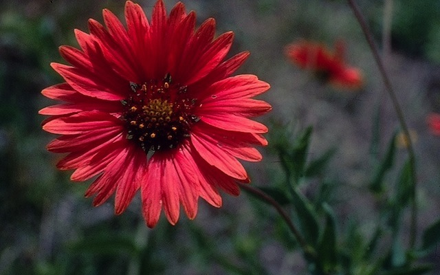

Skip navigation
Resources
Omaha area plant hardiness zone information
Recommended drought-tolerant perennials
Recommended drought-tolerant perennials

Blanket flower (Gaillardia aristata)
Omaha area plant hardiness zone information
| Zone |
Average annual minimum temp |
Last frost |
First frost |
| Fahrenheit |
Celsius |
| 4b |
-25°F to -20°F |
-28.9°C to -31.6°C |
May 1 |
Oct 15 |
| 5a |
-20°F to -15°F |
-26.2°C to -28.8°C |
| 5b |
-15°F to -10°F |
-23.4°C to -26.1°C |
Blanket flower (Gaillardia aristata)
- Black-eyed Susan
- Rudbeckia hirta
- Prairie coneflower, Echinacea
- Ratibida columnaris
- Perennial sunflower, Jerusalem artichoke
- Helianthus tuberosus
- Mexican Hat coneflower, Gray-Headed coneflower
- Ratibida pinnata
- May night salvia, Caradonna salvia
- Salvia nemorosa
- Prairie aster
- Aster tanacetifolius
- Blanket flower
- Gaillardia aristata
- Golden tickseed
- Coreopsis tinctoria
- Poppy mallow
- Callirhoe involucrata
- Cranesbill geranium
- Geranium maculatum
- Spike gayfeather
- Liatris spicata
- Butterfly milkweed
- Asclepias tuberosa